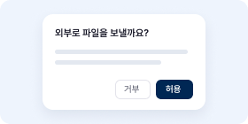
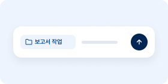

업데이트 소식
새 기능과 달라진 점을 버전별로 알려 드립니다.
0.4.10 최신
2026-10-08 업데이트
이 밖에도 달라졌어요
- 가입 정책 카드 관리자신규 가입자의 기본 역할과 사용 한도를 함께 정합니다.
- 그룹 목록 필터 관리자내 그룹과 관리할 수 없는 그룹으로 나눠 봅니다.
- MCP 콜백 주소 표시 관리자제공자 앱에 등록할 콜백 주소를 연결 화면에서 바로 봅니다.
- @멘션 다시 시도목록을 불러오지 못하면 안내와 “다시 시도” 버튼을 보여 줍니다.
- Windows 알림으로 대화 열기데스크톱 앱 알림을 누르면 해당 대화로 이동합니다.
0.4.9
2026-10-07 업데이트

외부 전송은 승인 후 실행
파일을 외부 주소로 보내거나 외부 주소에서 받아오는 도구는 실행 전에 승인을 묻습니다. 허용해야 실행합니다.
이 밖에도 달라졌어요
- 외부 이미지는 링크로답변과 문서 속 외부 이미지를 자동으로 불러오지 않고 링크로 보여 줍니다.
- 표에서 Ctrl+F표 칸을 누른 뒤에도 브라우저 찾기가 열립니다.
- 프로필 메뉴 모양프로필 버튼 폭에 맞춘 드롭다운으로 바뀌었습니다.
0.4.8
2026-10-06 업데이트
프로필 메뉴 정리
프로필 메뉴의 항목 이름과 순서, 묶음을 다시 정리했습니다. 설정 항목의 위치가 바뀌었으니 메뉴를 한 번 확인해 주세요.

새 채팅의 작업 폴더
데스크톱 앱에서 새 채팅을 열면 마지막으로 고른 작업 폴더가 기본으로 선택됩니다.
이 밖에도 달라졌어요
- 오피스 파일 미리보기엑셀, 워드, 파워포인트, 한글 파일이 실제 프로그램과 같은 모양으로 보입니다.
- 엑셀 수식 표시줄미리보기에서 수식 원문을 보고 열 너비를 조절합니다.
- 모바일 답변 이어 보기화면을 껐다 켜도 진행 중인 답변이 멈추지 않습니다.
0.4.7
2026-10-05 업데이트
이번 업데이트, 이렇게 달라졌어요
- 딥 리서치 속도조사원이 한꺼번에 출발하고 같은 검증을 반복하지 않아 보고서가 더 빨리 나옵니다.
- 답 속 출처와 링크출처는 문장 끝 칩으로, 값 바로가기는 밑줄 링크로 구분합니다.
- 사내 문서 미리보기답에 걸린 사내 문서 링크를 앱 안 미리보기로 엽니다.
- 감사의 권한 거부 표시 관리자권한이 거부된 테이블을 도구 결과 기준으로 보여 줍니다.